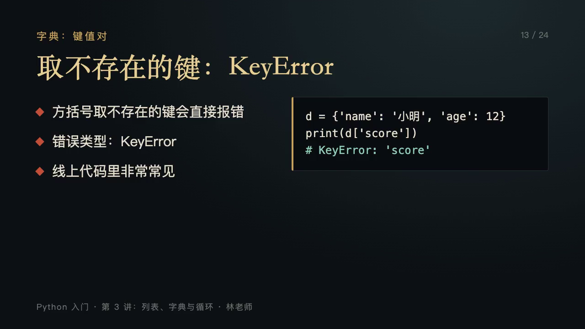
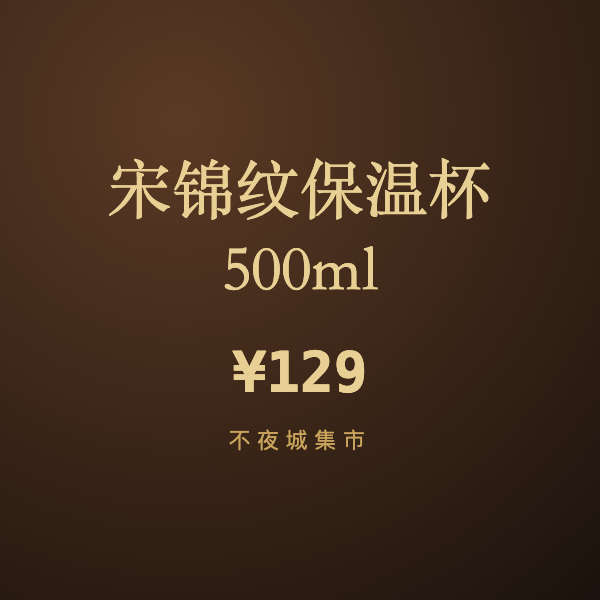
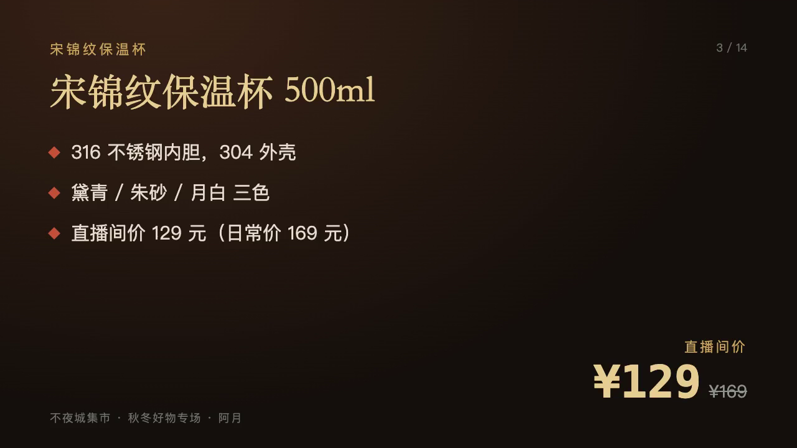

回放不夜城 · 设计稿 v2
夜巡破案 · 提灯、卷宗、更鼓。界面是随身卷宗与账簿，不用悬浮游戏 HUD；配色只用墨、赭、旧金、灯火橙与朱印。画面里的回放截帧、商品封面都来自测试环境的两场真实数据。
墨 #0d0f13
夜 #121a24
卷宗纸 #e8dcc0
赭 #8a5a2c
旧金 #b8975a
灯火 #e3893a
朱印 #a3312a
壹 · 回放广场 · 子时每一讲回放是一座楼阁，楼阁前的绢幕在播这一讲；点绢幕看完整回放。
第三讲
列表、字典与循环 · 1,862 人看过 · 22:24 · 点绢幕看完整回放
● 红点 = 全场卡点：12:41 · 27 人在此卡住
子时
三更 · 更鼓三响
距天亮 四个时辰
按你的本地时间 23:42
随 身 卷 宗
灯
积分240
已破第一、二讲
道具
夜巡
楼阁 = 一讲回放：层数随观看人次，挂朱旗表示已破解；未开的讲次楼阁不亮灯。数据来自回放列表与观看记录。
绢幕在播真回放：静音循环播本讲高光；点击进入「贰」的完整回放播放器。进度条上的红点是全场卡点。
不用 HUD：灯（生命）、积分、道具都写在右上的随身卷宗里；左上是时辰牌，更鼓按真实时辰敲。
贰 · 完整回放点绢幕打开。卷宗式播放器，可拖动；进度条标出卡点、章节与商品讲解。
第三讲 · 林老师
列表、字典与循环

「方括号是必须有，没有就报错；get 是有就给，没有就给默认值。」
09:42 / 22:24倍速 1.25 · 字幕 开 · 卷宗模式
◆ 09:41 · 字典 get 与 KeyError · 34 人追问 · 71% 答错
本 讲 卷 目
壹 · 为什么需要容器00:28
贰 · 列表索引与越界01:54
叁 · 切片03:34
肆 · 增删改与复制陷阱 ◆04:17
伍 · 字典、get 与键 ◆06:37
陆 · for 循环与 range09:11
柒 · 遍历字典10:42
捌 · 词频统计11:10
全 场 卡 点
◆ 02:41 负索引 · 27 人问「a[-0] 是什么」
◆ 05:12 append 与 extend · 62% 答错
◆ 09:41 KeyError 与 get · 71% 答错
回到广场入此讲密室
回放
完整回放：播放暂存的 m3u8 / mp4（hls.js），可拖动、倍速、开关字幕；密室里的「回看」都跳到这里的对应秒数。
进度条三种刻度：竖线是 AI 大纲章节，朱红菱形是全场卡点（聊天追问 + 答题卡错误率），带货场另有商品讲解段。
右侧卷目：章节与卡点点击即跳转；「入此讲密室」进入这一讲的闯关。
叁 · 密室门题门上挂着一个疑问，答对开门、得道具；道具开启后面某一关。
肆 · 增删改之室 · 门上疑问
b = [1, 2]，c = b，c.append(3)，
此时 print(b) 得什么？
b = [1, 2]
c = b
c.append(3)
print(b)
疑
此处有 13 道血痕 · 「小满」选了乙 · 「Kevin」选了乙
墙上留字：「c = b 只是起了第二个名字」—— 晚风
寅时 · 五更将至
卯时天亮前破局 · 剩 二个时辰
一夜十二时辰 ≈ 6 分钟
随 身 卷 宗
灯
积分240
进门凭灯油 ✓
开门得铜鱼符
铜鱼符：开第五室「众惑」之门
回看 05:12用提示签
门题：取本室最重要的一道选择题，写在门上的卷轴里；四根竹签是选项，抽对一根门开。
道具链：进门凭「灯油」（上一室所得），开门得「铜鱼符」，用于第五室 Boss 门。链路由 schema 校验保证走得通。
前人痕迹：地上血痕 = 答错的人与他们选的签（答题卡真实作答）；墙上留字 = 真实聊天原句。
时辰：表盘是剩余时辰，卯时天亮前没破局按剩余进度评级；「回看」跳到完整回放 05:12。
肆 · 众惑 · 战败回血Boss 是全场的困惑；被击倒时以问答回血，答对添一盏灯。
众 惑
第五室 · 字典之惑 · 34 人在此追问 · 71% 答错
灯 将 尽 · 答 此 问 添 一 盏 灯
灯
d = {'name': '小明'}，
d.get('score', 0) 得什么？
甲 · 0乙 · None
丙 · 抛出 KeyError丁 · 'score'
讲 师 原 话 · 回 放 07:18
「get 取不到的时候默认返回 None，你还可以给它第二个参数当作默认值。」
回看这 40 秒认输，回广场
回血
众 惑 之 弱
弱点：get。用「铜鱼符」破门后，连答三问可散众惑：每答对一问，台下亮一盏灯。
战胜：积分 +120 · 得「卷宗残页」
Boss 不是怪兽：「众惑」由全场真实追问组成，飘在周围的字都是聊天原句；位置由答题卡真实错误率决定（课程第五室 71%）。
战败回血：灯灭前弹出回血卷，答对添灯；附讲师原话与回放时间点，可直接回看这 40 秒。
战胜：得积分与道具（卷宗残页），残页集齐拼出终局问题。
伍 · 夜市店铺进店有伙计迎客介绍；商品卡可展开看图文与价格，「看讲解」播放这件商品在回放里的那一段。
伙 计 · 阿 青
「客官来得巧，这宋锦纹保温杯有黛青、朱砂、月白三色。装 95 度的热水放 12 小时，打开约莫还有 62 度——这是主播阿月在直播里说的实测，冬日室外会低些。」
杯身多粗？500 和 350 怎么选？能退吗？
货 单 · 宋 锦 纹 保 温 杯 500ml

内胆 316 不锈钢 · 外壳 304
颜色 黛青 / 朱砂 / 月白
尺寸 直径 7.2cm · 高 24cm · 360g
¥129 ¥169
另有 350ml 款 89 元，两款杯盖通用；不建议装碳酸饮料与牛奶久放。满 199 减 30，可与眼罩凑单。

▶ 看讲解 · 主播阿月回放 00:58 – 02:36
讲解片段来自直播中的商品讲解打点；卡片内容来自商品库。
记入账簿 · 去下单看下一件
货单
有人张罗：进店伙计迎客，台词按商品详情与主播原话生成；底部三个追问来自聊天里的真实顾虑。
商品卡：封面图、简介、详情、价格；不写功效承诺与绝对化用语（合规约束）。
看讲解：播放这件商品在回放里的讲解段（商品讲解打点；兜底用造数时间轴 + 暂存 mp4）。
陆 · 回放广场 · 午时按观众本地时间切换：白天市井、灯笼不点；倒计时终点变为「宵禁前」。
午时
日中 · 市井正热
距宵禁 七个时辰
按你的本地时间 12:20
随 身 卷 宗
灯
积分240
今日巡夜字典街渐暗
三日未回看，第五室的灯熄了一半，回来重新点亮。
日巡
第三讲 · 列表、字典与循环 · 点绢幕看完整回放
昼夜：日 / 暮 / 夜 / 拂晓四个时段按本地时间切换，影响天光、灯笼、行人与背景声；夜里全城灯火、更夫巡夜。
倒计时终点：夜里是「天亮前」，白天是「宵禁前」。
遗忘变暗（P1）：学过的街区随遗忘曲线熄灯，回来巡夜重新点亮，即间隔复习。